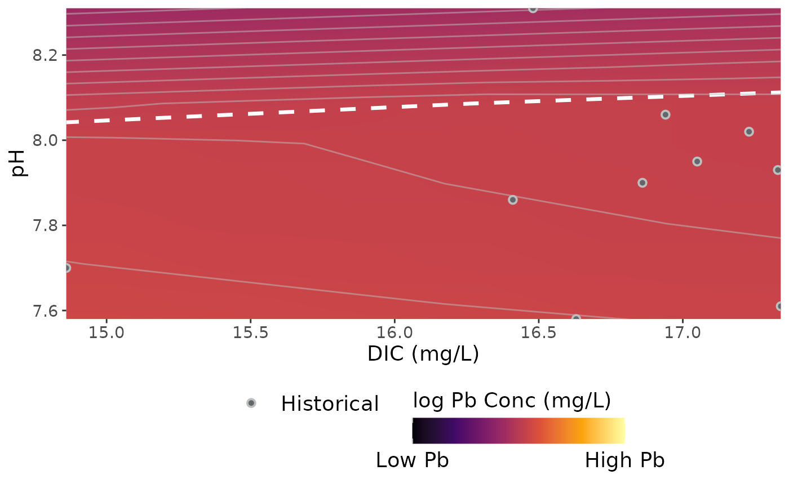

This function takes a data frame and outputs a contour plot of dissolved lead and DIC plot. Assumes that the range of pH and dissolved inorganic carbon (DIC) occurs at a single temperature and TDS.
Arguments
- df
Source data as a data frame. Must have pH and DIC columns. Columns containing a single temperature and TDS can also be included.
- temp
Temperature used to calculate dissolved lead concentrations. Defaults to a column in df.
- tds
Total dissolved solids used to calculate dissolved lead concentrations. Defaults to a column in df.
- ph_range
Optional argument to modify the plotted pH range. Input as c(minimum pH, maximum pH).
- dic_range
Optional argument to modify the plotted DIC range. Input as c(minimum DIC, maximum DIC).
Examples
# \donttest{
historical <- data.frame(
ph = c(7.7, 7.86, 8.31, 7.58, 7.9, 8.06, 7.95, 8.02, 7.93, 7.61),
dic = c(
14.86, 16.41, 16.48, 16.63, 16.86, 16.94, 17.05, 17.23,
17.33, 17.34
),
temp = 25,
tds = 200
)
plot_lead(historical)

# }